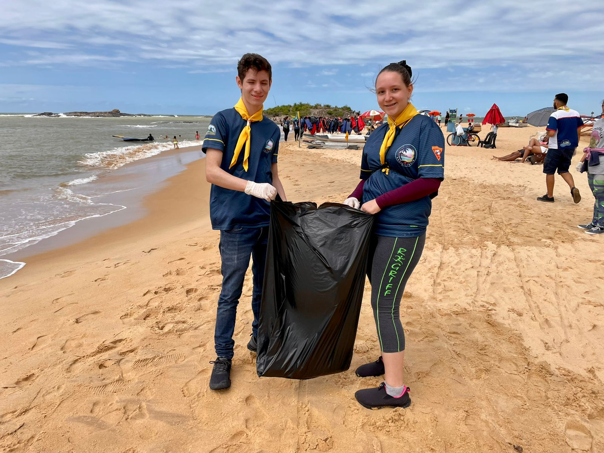
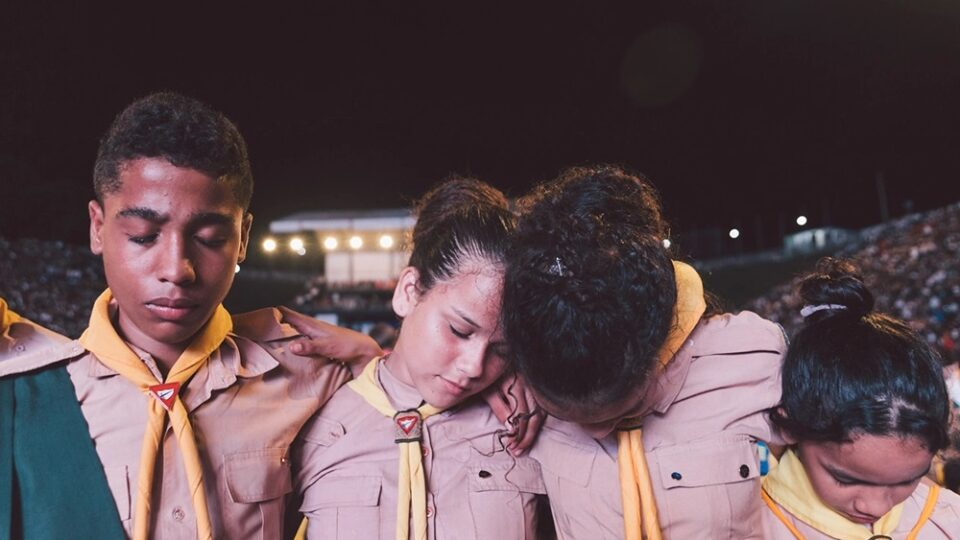

NOTÍCIAS
Voluntariado inspira pessoas com deficiência a educar sociedade para cultura de inclusão
Voluntariado é caminho para despertar sociedade para a necessidade de ser inclusiva, seja na escola, trabalho e até na igreja.
Por Poliana Andrade | Bahia
22 de setembro de 2022
Aos seis meses de vida, Islânia Oliveira foi diagnosticada com uma doença chamada retinoblastoma, um tipo raro de câncer ocular. A doença fez com que ela perdesse o olho direito. Dez anos mais tarde, sofreu uma queda, o trauma deslocou a sua retina e a deixou cega do olho esquerdo, fazendo com que perdesse totalmente a visão.
Islânia decidiu que seria advogada, área na qual trabalha hoje como funcionária pública. Ela queria colaborar em outras áreas e foi em busca de um trabalho voluntário onde pudesse desenvolver na sociedade a cultura de inclusão. Na Igreja Adventista do Sétimo Dia, da qual é membro, decidiu organizar um grupo de estudos da Bíblia.
O que a inspirou foi a integração que conseguiu experimentar na igreja, permitindo a pessoas com deficiência trabalhar voluntariamente em diversas atividades no templo. Ela conta que sempre sentiu ser parte daquela comunidade.
Moradora de Vitória da Conquista, interior da Bahia, ela coordena, atualmente, uma classe de estudos para crianças. No templo que frequenta, encontra recursos adaptados à sua condição.
Adolescentes fazem limpeza de praia e distribuem mudas de árvores em Vila Velha
Projeto CleanUp Day DBV reuniu mais de 200 adolescentes para servir à comunidade no litoral do Espírito Santo.
Por Marion Hothon | Espirito Santo
18 de setembro de 2022

O domingo, 18 de setembro, foi marcado pela consciência ambiental na região das praias em Vila Velha, no Espírito Santo. Duzentas crianças e adolescentes, que fazem parte dos diferentes Clubes de Desbravadores da cidade, se reuniram para dedicar a manhã do domingo na limpeza da orla e das praias da Costa, Sereia, Itapoan e parte do Morro do Moreno. Os voluntários também conversaram com os banhistas sobre a importância de não jogar lixo na areia ou no mar e distribuíram mudas de árvores.
Um dos organizadores da iniciativa e coordenador dos Desbravadores da região de Vila Velha, Erasmo Gazolli, explica que o projeto CleanUp Day DBV acontece em quatro datas durante o ano e tem o objetivo de ajudar a sociedade com a limpeza dos espaços públicos.
“Este projeto começou em 1990 junto com o projeto World Cleanup Day. Contudo, de 2015 para cá, decidimos criar um projeto próprio, o Cleanup Day DBV. Nos dias da Água (22/03), da Terra (22/04), do Meio Ambiente (05/06) e da Árvore (21/09), a gente leva os meninos e meninas às praias, praças e vias públicas a fim de fazer a limpeza do local, revitalizar os espaços, distribuir mudas de árvores, falarmos de consciência ambiental e deixarmos nossa marca positiva no bairro”, explica.
Ganhando para Deus pessoas que mudem o mundo
Milhares de crianças e adolescentes compartilham esperança em suas comunidades e levam a mensagem de salvação através do Clube de Desbravadores.
Por Karol Lazo, com informações de Rosmery Sánchez e Rosse Ramírez | Brasil
16 Setembro de 2022

Todo ano, os membros do Clube de Desbravadores usam seus lenços amarelos em escolas, escritórios, igrejas e outros lugares, enquanto realizam suas atividades cotidianas, durante toda semana que antecede o Dia Mundial do Desbravador.
Essa demonstração característica serve para chamar a atenção das pessoas para o que representa o Clube de Desbravadores e para as outras atividades que acontecem como parte da comemoração dessa data especial que, neste ano de 2022, será celebrada no sábado 17 de setembro com o tema “Eu vou mudar o mundo”.
O pastor Udolcy Zukowski, líder dos desbravadores para a América do Sul, explica que esse lema “foi escolhido para lembrar os adolescentes que eles podem fazer a diferença em sua comunidade e além. Inclusive com os desafios desta idade, como a pressão de grupo para experimentar coisas erradas, os problemas familiares, as dificuldades na escola, etc., eles podem tomar boas decisões e fazer o que é correto, bom e relevante para eles mesmos e para o mundo”.
E por isso, os mais de 360 mil desbravadores de 8 países da América do Sul saíram às ruas, durante toda a semana que antecede o Dia Mundial do Desbravador, para realizar diversas ações sociais com o objetivo de fazer a diferença em suas comunidades e ajudar a mudar a vida das pessoas.
Reinos com pés de barro
As riquezas conquistadas na terra não são um problema, mas não podem ocupar o espaço de Deus
Por Josanan Alves | Brasil
14 de setembro de 2022
Um dos textos bíblicos que mais podem nos ensinar sobre a verdadeira humildade é o capítulo dois do livro de Daniel. É interessante notar que um dos pontos de destaque no livro de Daniel é o contraste entre a humildade do profeta e seus amigos e a arrogância dos governantes e sábios da Babilônia e Medo-pérsia. De diversas formas isso fica evidente no livro, inclusive no sonho dado a Nabucodonosor no capítulo dois.
A Bíblia nos diz que o rei teve um sonho e Daniel recebeu de Deus a interpretação. O sonho era sobre “uma grande estátua. Esta, que era imensa e de extraordinário esplendor” (Daniel 2:31), estava dividida em cinco partes. “A cabeça era de ouro puro, o peito e os braços eram de prata, o ventre e os quadris eram de bronze; as pernas eram de ferro, e os pés eram em parte de ferro e em parte de barro” (Daniel 2:32-33). Cada uma dessas partes representava um reino que dominaria a terra. Esses reinos eram a Babilônia, Medo-Pérsia, Grécia, Roma Imperial e Roma Religiosa.